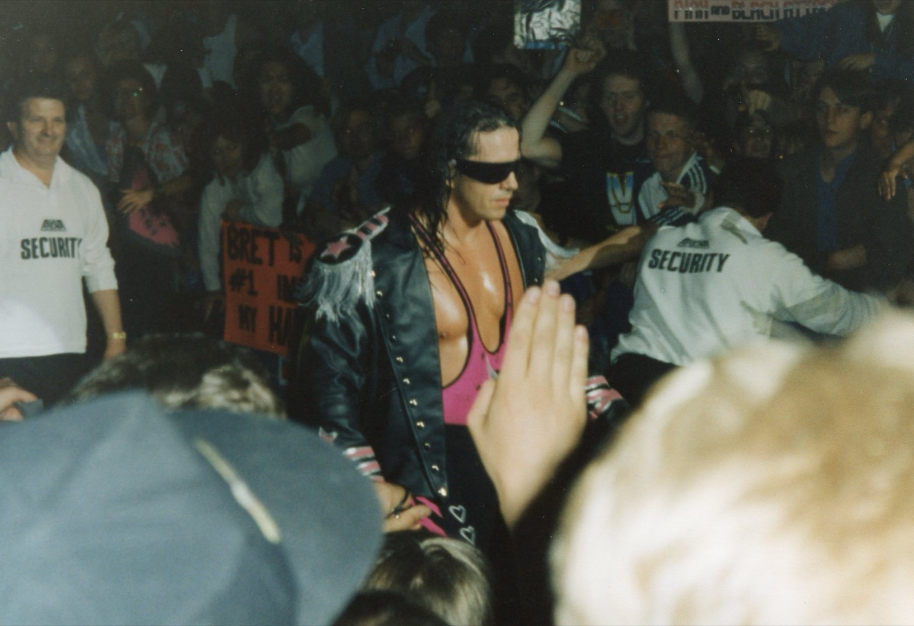

Il Montreal Screwjob: il tradimento di Vince McMahon a Bret Hart, spiegato
Survivor Series 1997, Montreal. Bret Hart sta per andare in WCW e non vuole perdere il titolo in Canada. Shawn Michaels lo blocca nella Sharpshooter, Vince McMahon fa suonare la campana e Bret non ha mai ceduto. Ecco com'è andato davvero il Montreal Screwjob.
Foto in copertina: Mandy Coombes, CC BY-SA 2.0, via Wikimedia Commons
Lo sapevi che il match più famoso della storia della WWE è finito con un tradimento? Un tradimento vero.
È il Montreal Screwjob, la curiosità del mio short. Ed è la storia che ha cambiato il wrestling per sempre.
Survivor Series 1997: il contesto
9 novembre 1997, Survivor Series, al Molson Centre di Montreal, in Canada. Main event: Bret Hart, campione WWF, contro Shawn Michaels.
Ma dietro le quinte la situazione è esplosiva. Bret ha firmato con la WCW, la federazione rivale, e il suo contratto lì parte il 5 dicembre. Sta per andarsene da campione.
E Bret non vuole perdere il titolo in Canada, davanti alla sua gente, e soprattutto non contro Michaels, con cui la rivalità era diventata anche personale. Ha detto che l'avrebbe lasciato ovunque, ma non lì.
Il finale concordato è una squalifica: Bret resta campione quella sera e il titolo lo perderà più avanti.
La campana che non doveva suonare
A circa venti minuti dall'inizio Michaels blocca Bret nella Sharpshooter. La mossa di Bret. Usata contro di lui.
E qui succede tutto. Vince McMahon, a bordo ring, ordina di far suonare la campana. L'arbitro Earl Hebner chiama la fine del match. Michaels vince per sottomissione ed è il nuovo campione.
Ma Bret non aveva ceduto. Mai.
Lo sputo e il pugno
Bret capisce in un secondo. Si alza e sputa in faccia a Vince McMahon, davanti a tutta l'arena. Poi disegna con le dita le lettere "WCW" a beneficio del pubblico e distrugge le attrezzature a bordo ring.
Non finisce lì. Nello spogliatoio Bret colpisce Vince con un pugno e lo manda a terra. Una parte di quella notte la si vede anche nel documentario Hitman Hart: Wrestling with Shadows, uscito nel 1998.
Cosa è cambiato dopo Montreal
Il Montreal Screwjob ha conseguenze enormi.
Vince, odiato dal pubblico per quello che aveva fatto, diventa il Mr. McMahon cattivo, il boss contro cui combatterà Stone Cold Steve Austin. Da lì parte l'Attitude Era.
Bret va in WCW, ma lì non trova mai lo spazio che meritava. E con la WWE ci vogliono anni per fare pace: nel 2006 entra nella Hall of Fame e nel gennaio 2010 torna in TV per la prima volta da quella notte.
Shawn Michaels, per anni, ha detto di non sapere niente. Più avanti ha ammesso di essere stato coinvolto nel piano.
Da che parte stai?
Io capisco Bret. Era il suo paese, il suo pubblico, e gli hanno fatto credere una cosa per poi fare il contrario in diretta. Allo stesso tempo capisco la paura di Vince: il suo campione stava per andare dalla concorrenza con la cintura. Ma il modo in cui l'ha fatto resta uno dei momenti più brutti e, insieme, più incredibili della storia del wrestling.
Tu da che parte stai, Bret o Vince? Scrivilo nei commenti dello short e iscriviti al canale Tony Wrestling. Altre storie dietro le quinte nella rubrica Lo sapevi che e tra i miei Shorts. E se ti piace Bret, la sua WrestleMania 9 contro Yokozuna te l'ho raccontata in Yokozuna a WrestleMania 9.
Fonti:
- Short: Lo screwjob di Montreal (Tony Wrestling)
- Montreal Screwjob, Wikipedia (data, luogo, contratto WCW, finale concordato, Earl Hebner, Sharpshooter, sputo e pugno a McMahon, documentario, Hall of Fame 2006, ritorno del 2010)
Domande frequenti
Cos'è il Montreal Screwjob?
È il finale di Survivor Series 1997 a Montreal. Shawn Michaels bloccò Bret Hart nella Sharpshooter e, su ordine di Vince McMahon, l'arbitro Earl Hebner fece suonare la campana e diede la vittoria a Michaels, anche se Bret non aveva ceduto.
Perché Bret Hart non voleva perdere a Montreal?
Bret stava per lasciare la WWF per la WCW e non voleva perdere il titolo in Canada, davanti al suo pubblico, contro un rivale come Shawn Michaels. Il finale concordato prevedeva una squalifica, con Bret ancora campione.
Cosa fece Bret Hart dopo il Montreal Screwjob?
Sputò in faccia a Vince McMahon davanti a tutti, distrusse attrezzature a bordo ring e poi, nello spogliatoio, colpì Vince con un pugno.